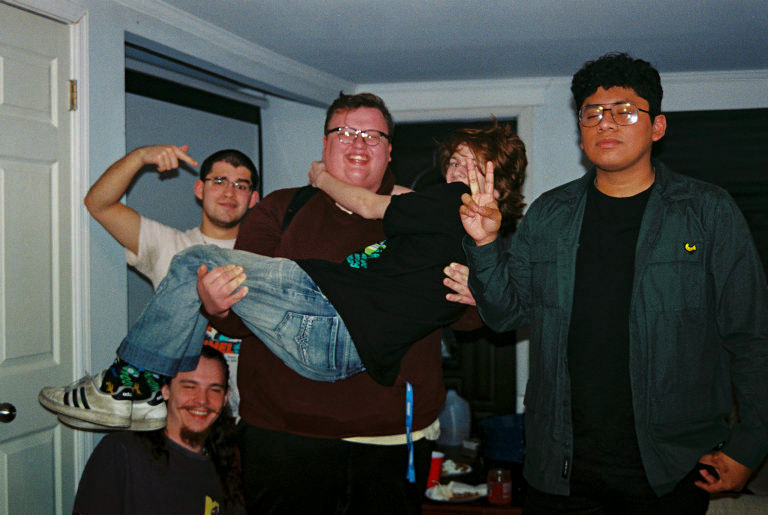
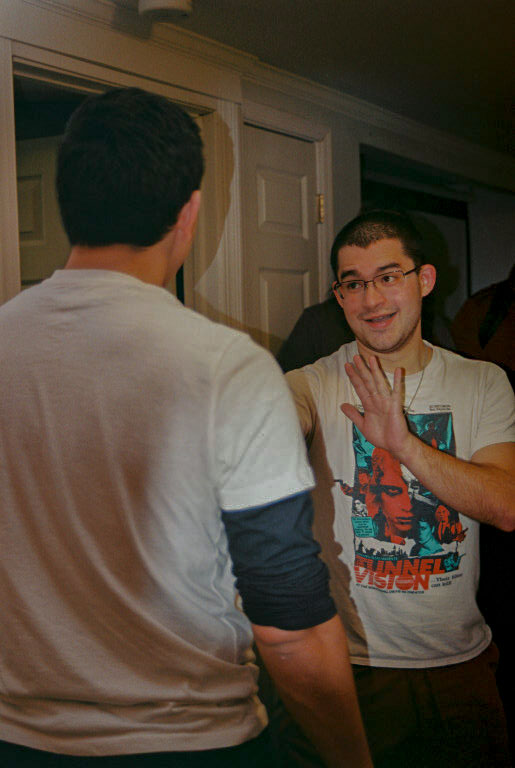
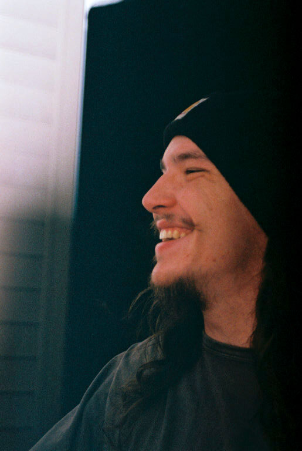
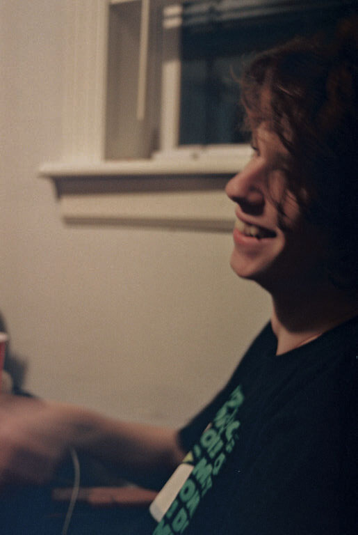
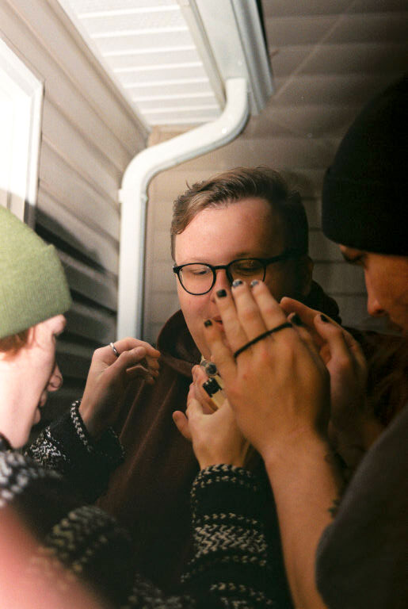

Image: superbowl 10
Place: Liam's House, Forked River, NJ 08731 39.953458,-74.205666
Who: Richie Malfitano, Danny McGrath, Sonny Soto, Rob Pawlowski, Matt Cheney, Jesus Gavilan
ISO and color: ISO 400, Color
date: February 12
quote: “Yeah. Yeah. Makes sense.”

Image: superbowl 11
Place: Liam's House, Forked River, NJ 08731 39.953458,-74.205666
Who: Richie Malfitano, Sonny Soto
ISO and color: ISO 400, Color
date: February 12
quote: “And she took a few photos. Normally I'm not too comfortable with my picture taken, I freeze up and I don't know what to do. But it was pretty cool. Good, good atmosphere and I didn’t really- really mind.”

Image: superbowl 17
Place: Liam's House, Forked River, NJ 08731 39.953458,-74.205666
Who: Rob Pawlowski
ISO and color: ISO 400, Color
date: February 12
quote: “that they saw photography as like a way almost like a reincarnation or like an afterlife because all of your like what you leave behind and like you did the like print that you make on the world is like, your like material print on the world is like your like that's how you are like reincarnated.”

Image: superbowl 4
Place: Liam's House, Forked River, NJ 08731 39.953458,-74.205666
Who: Danny McGrath
ISO and color: ISO 400, Color
date: February 12
quote: “So like, all of like my photography work. I would be leaving it and it would be like everyone else can see it and so it'd be like born again almost through my photos.”

Image: superbowl 5
Place: Liam's House, Forked River, NJ 08731 39.953458,-74.205666
Who: Danny McGrath, Rob Pawlowski, Matt Chaney
ISO and color: ISO 400, Color
date: February 12
quote: “Yeah, I think I don't know. I just like want to find the beauty in moments where people don't like normally see stuff.”